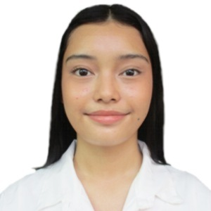

Developers

Yannah Lavrinthe S. Fuentes
Yannah is a 21-year-old BS Marine Biology student at the University of the Philippines Marine Science Institute (UPMSI).
She developed a passion for the ocean from a young age and pursued her studies in the field. She has been a part of various environment organizations namely:
Young Leaders for the Environment and World Wide Fund for Nature, earning achievements such as Member of the Year, Most Funds Raised, etc. Of course, her hobbies include reading, researching, and learning about the environment,
as well as exercising and baking. Yannah is a valued and dedicated member of our organization who has been a vocal advocate for ocean conservation and environmental protection.

Shaenia Laraine H. Cabalo
Shaenia is a 19-year-old college student currently studying at the Univerity of the Philippines Marine Science Institute (UPMSI). She is taking the course Marine Biotechnology. Her journey toward becoming an activist for the ocean began with a deep-rooted fascination for the sea. She felt comfort in watching waves, collecting seashells, and marveling at the vastness of the ocean. The more she learned about pollution, overfishing, coral reef bleaching etc. the more she felt a growing responsibility to act and to give back the love the oceans had given her. Besides using social media to raise awareness, she also began organizing conferences and seminars related to marine conservation. Some of the organizations she took part in were: Greenpace Philippines & Oceana Philippines. She is just a new member of this organization and she is ready to learn about the intricacies of ocean conservation, the key challenges, and the strategies we employ to ke a difference.